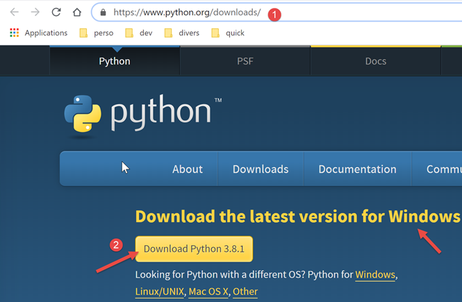
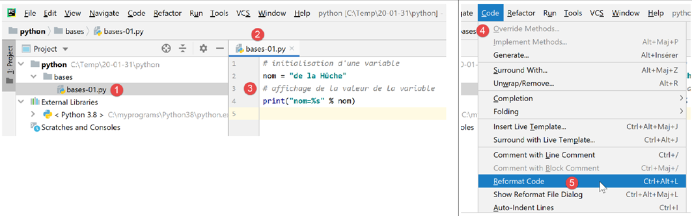
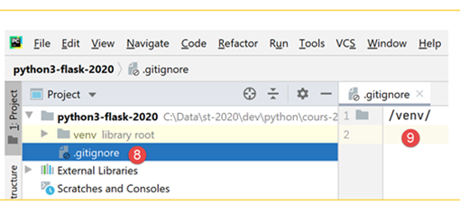
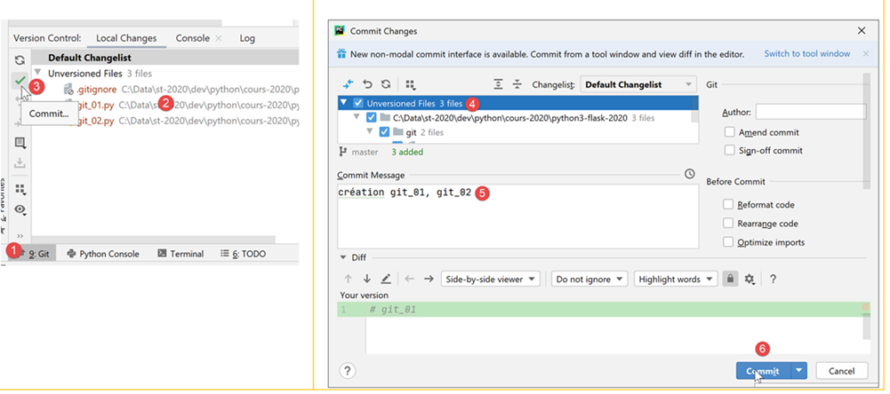
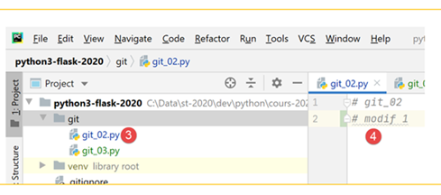
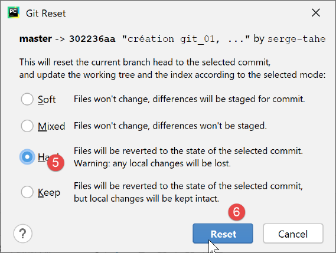

2. Instalación de un entorno de trabajo
2.1. Python 3.8.1
Los ejemplos de este documento se han probado con el intérprete de Python 3.8.1 disponible en URL |https://www.python.org/downloads/| (feb. 2020) en una máquina con Windows 10:

La instalación de Python genera el árbol de archivos [1] y el menú [2] en la lista de programas:

- [3-4]: dos intérpretes interactivos de Python;
- [5]: la documentación de Python;
- [6]: la documentación de los módulos de Python;
No utilizaremos el intérprete interactivo de Python. Solo hay que saber que los scripts de este documento podrían ejecutarse con este intérprete. Aunque es útil para probar el funcionamiento de una funcionalidad de Python, no lo es tanto para scripts que deban reutilizarse. A continuación, un ejemplo con la opción [4] mencionada anteriormente:

El indicador >>> permite introducir una instrucción de Python que se ejecuta de inmediato. El código escrito arriba tiene el siguiente significado:
Líneas:
- 1: inicialización de una variable. En Python, no se declara el tipo de las variables. Estas adoptan automáticamente el tipo del valor que se les asigna. Este tipo puede cambiar con el tiempo;
- 2: visualización del nombre. «nom=%s» es un formato de visualización en el que %s es un parámetro formal que designa una cadena de caracteres. nom es el parámetro efectivo que se mostrará en lugar de %s;
- 3: el resultado de la visualización;
- 4: la visualización del tipo de la variable «nombre»;
- 5: la variable «nombre» es aquí de tipo class. Con Python 2.7 tendría el valor <type 'str'>;
Ahora, abramos una consola de Windows:

El hecho de que hayamos podido escribir [python] en lugar de [1] y de que se haya encontrado el ejecutable [python.exe] demuestra que este se encuentra en el directorio PATH de la máquina con Windows. Esto es importante porque significa que las herramientas de desarrollo de Python podrán encontrar el intérprete de Python. Se puede verificar de la siguiente manera:

- en [2], salimos del intérprete de Python;
- en [3], el comando que muestra el PATH de los ejecutables de la máquina con Windows;
- en [4], se ve que la carpeta del intérprete de Python 3.8 forma parte de PATH;
2.2. El IDE PyCharm Community
2.2.1. Introducción
Para compilar y ejecutar los scripts de este documento, utilizamos el editor [PyCharm], edición Community, disponible (febrero de 2020) en URL |https://www.jetbrains.com/fr-fr/pycharm/download/#section=windows| :

Descarga el IDE, PyCharm y [1-3] de la edición Community e instálalos.
Ejecutemos el IDE PyCharm y luego creemos un primer proyecto en Python:


- En [2-4], cree un nuevo proyecto;
El IDE PyCharm muestra el proyecto creado de la siguiente manera:

- en [2-3], revisemos las propiedades de IDE;

- en [4], el intérprete de Python que se utilizará para el proyecto;
- en [5], una lista desplegable de los intérpretes disponibles;
- en [6], se selecciona el intérprete descargado en el apartado |Python 3.8.1|;

- en [7], el intérprete seleccionado;
- en [8], la lista de paquetes disponibles con este intérprete. Los paquetes contienen módulos que los scripts de Python pueden utilizar. Hay cientos de módulos disponibles;
Comencemos por crear una carpeta en la que colocaremos nuestro primer script de Python:

- haz clic con el botón derecho del ratón en el proyecto y luego selecciona [1-2] para crear una carpeta;
- en [3], escribe el nombre de la carpeta: se creará dentro de la carpeta del proyecto;
A continuación, creemos un script de Python:

- Haz clic con el botón derecho en la carpeta [bases] y luego selecciona [1-3];
- en [4-5], escribe el nombre del script;
Escribamos nuestro primer script:

-
en [3], escribimos el siguiente script:
- líneas 1 y 3: los comentarios comienzan con el signo #;
- línea 2: inicialización de una variable. Python no declara el tipo de sus variables;
- línea 4: salida a pantalla. La sintaxis utilizada aquí es [format % données] con:
- formato: nombre=%s, donde %s indica la ubicación de una cadena de caracteres. Esta se encontrará en la parte [données] de la expresión;
- datos: el valor de la variable [nom] reemplazará el formato %s en la cadena de formato;
- con [4-5], se reformatea el código según las recomendaciones del organismo que administra Python;
El script se ejecuta haciendo clic con el botón derecho sobre el código [6]:

- en [7], el comando ejecutado;
- en [8], el resultado de la ejecución;
Para ejecutar el script del documento, descargue el código en URL |https://tahe.developpez.com/tutoriels-cours/python-flask-2020/documents/python-flask-2020.rar| y luego, en PyCharm, siga estos pasos:

- en [1-2], al abrir un proyecto existente: seleccione la carpeta del código descargado;
- en [3], el proyecto abierto;
- en [4-5], ejecute uno de los scripts del proyecto;

- en [7-8], los resultados de la ejecución;
2.2.2. Entorno virtual de ejecución
Nuestro entorno de trabajo ya está operativo. Sin embargo, lo modificaremos para escribir los scripts de este curso. En primer lugar, modifiquemos la configuración de PyCharm:

En la ventana de la derecha:
- por defecto, la casilla [1] está marcada. La desmarcamos para que PyCharm no abra por defecto el último proyecto abierto, sino que nos permita elegir cuál queremos abrir;
- en [2], no se confirma la salida de PyCharm al cerrar la ventana de la aplicación;
- en [3], los nuevos proyectos se abren en otra ventana;
- en [4], si cerramos PyCharm y hay un programa en ejecución, este se detiene;
Ahora cerremos PyCharm y volvamos a abrirlo:

- en [1], creamos un nuevo proyecto;
- en [2], indica la carpeta del proyecto;
- En [3], utiliza un entorno virtual. Un entorno virtual es específico del proyecto que se está creando. No se mezcla con los entornos virtuales de otros proyectos. Un proyecto de Python/Flask utiliza numerosas bibliotecas externas que hay que instalar. Un proyecto P1 puede utilizar la biblioteca B en su versión v1, mientras que un proyecto P2 puede utilizar la misma biblioteca B, pero en su versión v2. Estas dos versiones pueden ser más o menos compatibles. Ahora bien, cuando se instala una biblioteca en su versión v2 y ya está instalada una versión v1, esta última es sobrescrita por la versión v2. Esto puede ser problemático para el proyecto que utilizaba la versión v1 si la nueva versión v2 no es totalmente compatible con la versión v1. Para evitar estos problemas, se aísla cada proyecto en un entorno virtual;
- en [4], indica la carpeta donde se almacenarán las bibliotecas de Python que se descargarán durante el proyecto. Aquí hemos elegido una carpeta [venv] (entorno virtual) dentro de la carpeta del proyecto. No es obligatorio hacerlo así;
- en [5], el intérprete de Python del proyecto. Es el que instalamos en el paso anterior;
- en [6], crear el proyecto;

- en [7-8], el proyecto creado;
- en [9], el entorno de ejecución del proyecto, llamado entorno virtual;
- en [10], la carpeta [site-packages] es la carpeta en la que se almacenarán las bibliotecas que se descarguen posteriormente;
2.2.3. Git
A continuación, se activa un software de control de código fuente. En este caso será Git [1-4]:

Un software de control de código fuente (VCS: Sistema de Control de Versiones) permite dar seguimiento a las evoluciones de un proyecto. Se pueden tomar instantáneas, mediante una operación llamada «commit», del proyecto en diferentes momentos de su desarrollo. Si se realizan dos «commits» en los momentos T y T+1, el VCS permite saber qué ha cambiado entre las dos versiones confirmadas. Normalmente, el VCS lo utiliza un equipo de desarrolladores. Estos realizan commits de su código una vez que este ha sido debidamente probado. A partir del VCS, los demás desarrolladores pueden recuperar este código validado y utilizarlo.
En este caso, solo hay un desarrollador. La experiencia demuestra que puede haber una aplicación que funcione en el momento T y que ya no funcione en el momento T+1. En ese caso, nos gustaría volver al momento T para empezar de cero. El VCS permite hacer esto y es por eso que lo vamos a utilizar aquí.
Mostramos cómo hacerlo con Git.

- En [1], selecciona la pestaña [Git] (abajo a la izquierda);
- en [2], vemos que hay 495 archivos del proyecto que no están controlados por Git. Esto significa que no formarán parte de las fotos del proyecto al realizar los commits;
- en [3], el botón de [commit] o el botón de validación del proyecto. Como se ha mencionado, Git toma entonces una instantánea del proyecto y la almacena en una carpeta [.git] en la raíz del proyecto (no se muestra en PyCharm, pero es visible en el Explorador de Windows);
Validemos el proyecto en su estado actual.
- en [4], la lista de archivos sin versionar;
- en [5], todos estos archivos sin versionar pertenecen al entorno virtual [venv];
- en [6], toda confirmación debe ir acompañada de un mensaje. Aquí el desarrollador describe los cambios introducidos por la versión que se va a confirmar con respecto a la última versión confirmada;
Git puede ignorar ciertas carpetas o archivos. En ese caso, nunca forman parte de la instantánea. En [5], arriba, hagamos clic con el botón derecho en la carpeta [venv].
- En [1-3], se indica que la carpeta [venv] no debe formar parte de los cambios de Git. La lista de carpetas y archivos ignorados por Git se guarda en un archivo llamado [.gitignore] [4];


- tras la operación anterior, todos los archivos de la carpeta [venv] desaparecen de la lista de archivos no controlados por versiones. Solo queda el archivo [.gitignore] que acabamos de crear;
- en [5], lo seleccionamos para que se guarde;
- en [6], creamos un mensaje de confirmación:
- en [7], lo confirmamos. A continuación, se toma la foto del proyecto;

- en [8-9], el contenido del archivo [.gitignore]: una sola línea con el nombre de la carpeta [/venv], lo que indica que su contenido debe ignorarse en las fotos;
Ahora veamos para qué nos puede servir Git. En primer lugar, creamos una carpeta [git] (puedes usar cualquier otro nombre; se puede eliminar al final de la demostración):

- en [1-5], creamos una carpeta llamada [git];

- en [6-10], creamos un script de Python [git_01];

- en [11-12], el script solo contiene un comentario;
- en [13-14], se crea una copia de [git_01]. Para ello, selecciona [git_01] y presiona Ctrl-C (Copiar), luego (Ctrl-V) (Pegar) e indica [git_02] como nombre de archivo;

Ahora, realicemos el commit de nuestro proyecto. Se tomará una foto con los dos archivos [git_01, git_02];

- en [1-3], se confirma el proyecto;
- en [4], seleccionamos los archivos no controlados que queremos confirmar, en este caso todos;
- en [5], se ingresa el mensaje que identifica la confirmación;
- en [6], se confirma;

- en [1-2], se confirma la confirmación;
- en [3], seleccionamos la pestaña [Log];
- en [4], una vista de las ramas del proyecto. Aquí, una sola rama llamada [master];
- en [5-6], la confirmación que se acaba de realizar;
Ahora creemos de la misma manera un script [git_03]:

Modifiquemos el script [git_02] y eliminemos el script [git_01]:

Luego, confirmemos la nueva versión:

Ahora tenemos dos confirmaciones en los registros:

Al seleccionar una confirmación en particular, aparece a su derecha el árbol de archivos del proyecto:

Ahora supongamos que la última confirmación nos ha llevado a un punto muerto y que quisiéramos volver a una situación correspondiente a una de las confirmaciones anteriores:

- en [1-2], seleccionamos la confirmación al estado de la cual queremos regresar;
- en [3-5], existen varios modos de restablecimiento. Elegimos el modo [hard], que nos lleva al estado seleccionado, perdiendo los cambios que se han realizado desde entonces;

- en [6], se ha recuperado [git_01], que había sido eliminado;
- al pasar de [7-8], se recupera [git_02] en su estado original sin la modificación que se había realizado;
Ahora, modifiquemos [git_02] y agreguemos [git_03] y [1-4]:

Ahora, repitamos la operación para volver a la confirmación inicial:

- en [1-4], volvemos a la imagen del commit n.º 1;
- en [5-6], elegimos la opción [Keep] en lugar de [Hard]. Estas opciones no son fáciles de entender. Por eso hay que probarlas:
 |  |
- en [1], el archivo [git_03] sigue ahí;
- al convertir a [2-3], el archivo [git_02] conservó sus modificaciones;
Es difícil decir qué hizo este [Revert Commit]. Ahora confirmemos la situación actual:

- en [1-6], la confirmación;

- en [9], vemos la nueva confirmación;
Ahora, intentemos volver a la confirmación 1 tal como ya se hizo:
 |  |
- en [1-6], regresamos a la confirmación n.º 1 en modo [Hard];

- en [7-8], esta vez sí se han perdido todas las modificaciones realizadas desde la primera confirmación;
A partir de aquí, no volveremos a mencionar [Git]. El lector podrá trabajar de la siguiente manera:
- puede seguir los ejemplos que se proporcionan, ya sea escribiéndolos él mismo o descargándolos del sitio web del curso;
- cada vez que un ejemplo funcione, podrá hacer un commit de su proyecto;
- cuando desarrolle su propio código y se encuentre en un punto muerto, sabrá que puede volver a una situación estable recuperando una confirmación anterior;
2.3. Convenciones de escritura de código en Python
Se puede escribir código en Python sin seguir las convenciones de escritura y eso no impedirá que funcione. Pero es posible que no sea bien recibido por la comunidad de Python, que ha establecido ciertas convenciones de escritura. Estas se resumen en una publicación en la dirección |https://stackoverflow.com/questions/159720/what-is-the-naming-convention-in-python-for-variable-and-function-names|:

- El nombre de un módulo (module_name) sigue una convención que a veces se denomina [snake_case]: todo en minúsculas, con palabras separadas opcionalmente por el carácter de subrayado. Esta convención [snake_case] se aplica a los nombres de métodos, paquetes, variables y funciones;
- el nombre de una clase (ClassName) sigue una convención que a veces se denomina [PascalCase]: una secuencia de palabras unidas, con la primera letra de cada palabra en mayúscula;
- los nombres de las constantes siguen la convención [SNAKE_CASE]: una secuencia de palabras en mayúsculas separadas por el carácter de subrayado;
Estas convenciones se han seguido en general en este documento. Sin embargo, para los módulos que definen una clase, le he dado al módulo el mismo nombre que la clase que contiene. Por lo tanto, sigue la convención [PascalCase] en lugar de [snake_case]. Quería poder identificar rápidamente los módulos de clases.